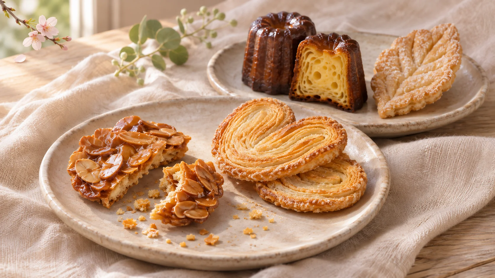

01ナッツがザクッ
菓子工房こいづみ
大きな割れフロランタン
ナッツの層を、好きな大きさに割って。
アーモンドやピスタチオなどをキャラメル生地でまとめた大判のフロランタン。表面のナッツと下の焼き生地で、噛むたびに違う歯ざわりを楽しめます。
訳あり品。割れ方や形には個体差があります。
SWEETS COLLECTION
ひと口目の、歯ざわりで選ぶ。
ナッツのザクッ、薄いパイのサクッ、カラメルのパリッ。どこをかじると食感が変わるのか、10のお菓子を比べてみましょう。
10の商品を見る ↓
広告を含みます 商品画像・購入リンクには、アフィリエイト広告を使用しています。
食感と選定根拠は販売元の商品説明・公開レビューをもとに掲載。取扱い・掲載情報は2026年11月20日確認。
菓子工房こいづみ
ナッツの層を、好きな大きさに割って。
アーモンドやピスタチオなどをキャラメル生地でまとめた大判のフロランタン。表面のナッツと下の焼き生地で、噛むたびに違う歯ざわりを楽しめます。
訳あり品。割れ方や形には個体差があります。
CAFE OHZAN（カフェ オウザン）
薄く焼いたラスクに、5種類のチョコレートの飾り。
スティック形に焼いたラスクを、チョコレートとフルーツやナッツで彩った詰め合わせです。ラスクのサクサクした歯ざわりと、ラズベリーや抹茶、コーヒーなど、1本ずつ違う組み合わせを楽しめます。
1箱5本入。手土産にする場合は、お届け予定日と賞味期限の案内をご確認ください。
パティスリー グレゴリー・コレ
スプーンで割る、ほろ苦いカラメル。
バニラの香るカスタードをココットに入れ、表面の砂糖をキャラメリゼ。薄いカラメルがパリッと割れたあと、なめらかなカスタードが広がります。
6個入り。冷凍で届きます。解凍の目安は販売ページをご確認ください。
北海道お土産ギフト岡田商店
焼き色が深い外側と、もちっとした米粉の生地。
北海道素材を使った米粉のカヌレ。焼き込んだ外側と、弾力のある内側の差を楽しめる一品です。食べ方はショップ案内に沿ってお試しください。
冷凍・10個入り。両モールとも味の選択欄がある場合は「プレーン」を選択。
メリーチョコレート
チョコの内側に、薄いパイの層。
クリームをパイで挟んでチョコレートをまとわせた、個包装のミルフィーユ。口に入れたときのチョコレートのなめらかさと、パイの軽い歯ざわりが楽しめます。
通常の10個入り。あまおう苺や季節限定の別セットもあります。
クヴェレ
パイの縁と、りんごのしっとり感を一緒に。
広告・楽天市場
群馬県産りんごを使ったホールのアップルパイ。果実のある中央とパイの縁で、しっとり感と焼き生地の香ばしさを食べ比べられます。
通常の6号ホール。プレミアムや異なる号数があります。温め方は販売ページの案内をご確認ください。
本高砂屋
薄く焼いた生地が、はらりとほどける。
三角・短冊・丸型の薄焼き菓子を詰め合わせたセット。生地だけのタイプとチョコ入りのタイプで、軽い歯ざわりや口どけの違いを楽しめます。
E10、計36枚（16包）。Yahoo!ショッピングの掲載品は包装・のし無し。
水車亭（南国製菓）
細切りのさつまいもを、カリッとかじる。
細切りのさつまいもを揚げ、甘さの中に塩気を合わせた芋けんぴ。細い一本をかじったときの歯ざわりを楽しみたい日に。
124g×2袋。同シリーズの大袋やセットもあるため、購入時は入り数をご確認ください。
日本橋錦豊琳
香ばしい生地に、黒糖のコク。
黒糖をまとわせた、昔ながらの味わいのかりんとう。揚げた生地の歯ざわりと、噛むうちに広がる黒糖の風味を楽しめます。
70g入り。詰め合わせや別の味もあります。
三立製菓
ハート形のパイを、端からひと口。
折り重なった生地を焼いたハート形のパイです。薄い層と砂糖の歯ざわりが重なり、香ばしい甘さが広がります。家族や職場で分けやすい大容量セットです。
1袋10枚入の12袋セットです。送料や配送条件はモールごとにご確認ください。